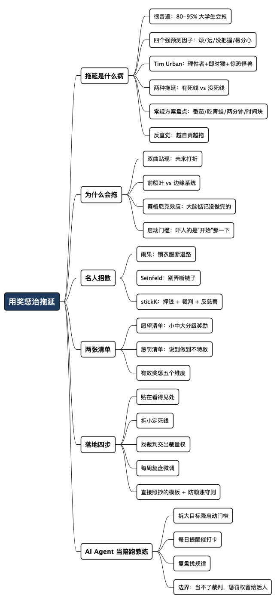

用奖惩治拖延：给自己列一张愿望清单和一张惩罚清单
Posted on 五 07 8月 2026 in Journal
| Abstract | 用奖惩治拖延：给自己列一张愿望清单和一张惩罚清单 |
|---|---|
| Authors | Walter Fan |
| Category | Journal |
| Version | v1.0 |
| Updated | 2026-08-07 |
| License | CC-BY-NC-ND 4.0 |
用奖惩治拖延：给自己列一张愿望清单和一张惩罚清单
先坦白一件不太光彩的事：对于那些不想做、又不得不做的事，我的恶习就是拖。
报销单能拖到财务发第三遍催办邮件；季度总结能拖到交稿当晚；那份说好"这周一定写"的设计文档，往往是在评审会前一天晚上，泡着浓茶硬着头皮码出来的。拖到实在拖不下去，才手忙脚乱地上，做出来的东西还不如平时——因为已经没有时间打磨了，只剩下"交差"。
拖延最坑人的地方，不是耽误那点时间，而是它会连本带利地把焦虑一起收走：你一边刷手机，一边心里那根弦一直绷着，玩也没玩痛快，事也没做，两头亏。
所以我不想再跟自己讲"你要有意志力"这种空话了。意志力这东西，靠得住的时候不用它，靠不住的时候它也不来。我想换个思路：既然讲道理没用，那就用点心理学，给自己设计一套奖惩机制——列一张愿望清单当胡萝卜，列一张惩罚清单当大棒，用奖励诱惑自己，用惩罚吓唬自己。
这篇就是我给自己搭的这套"胡萝卜加大棒"，模板可以直接抄。
拖延症到底是个什么病
先补点背景，免得我们一上来就把它当成"懒"或者"不自律"来批斗。
拖延远比想象中普遍。心理学家 Piers Steel 在 2007 年做过一篇基于 691 项研究的元分析，结论挺扎心：80% 到 95% 的大学生都会拖延，约一半拖得持续又严重，拖延能占掉他们日常活动的三分之一以上；成年人里也有 15% 到 20% 是慢性拖延者。 换句话说，你不是一个人在拖，你只是拖得比较坦诚。
更反直觉的是，Steel 发现拖延跟"神经质""叛逆""爱追求刺激"这些性格关系都很弱，真正的强预测因子是四个：任务有多讨厌、奖励有多遥远、你有多自信能搞定、你有多容易冲动分心。 翻译成人话：拖延不是人品问题，是"这活儿又烦、又远、我又没把握、旁边还有更好玩的"这四件事凑齐了。
博主 Tim Urban 有个流传很广的比喻，把这套机制画成了三个角色：脑子里有个"理性决策者"，还有个只顾眼前爽、既没过去也没未来概念的"即时满足猴"，平时是猴子在抢方向盘；唯一能吓住猴子的，是一只"惊恐怪兽"——它只在死线逼近、要当众出丑、要砸饭碗的时候才醒。这基本就是我每次赶稿前夜的内心实况。
Urban 还点出一个更要命的区分：拖延分两种。 有死线的拖延，怪兽迟早会醒，好歹能把事逼完，代价是质量差、人狼狈；真正可怕的是没有死线的拖延——想学门手艺、想多陪家人、想开始锻炼、想写那本书，这些事没人催你，怪兽永远不醒，于是它们不是被拖到最后一刻，而是被拖到永远不做。我这篇想治的，其实更多是后一种。
大家常用的那些招，我先替你试过
在祭出奖惩之前，市面上常见的抗拖延工具我基本都用过，给你盘一盘，顺便说说它们各自漏在哪儿：
| 常规方案 | 核心思路 | 为什么常常失灵 |
|---|---|---|
| 番茄工作法 | 25 分钟专注 + 5 分钟休息，降低启动门槛 | 对"开始"有效，管不住"中途想逃" |
| 吃青蛙 | 每天先干掉最难最烦的那件 | 道理都对，可"先干最烦的"本身就反人性 |
| 两分钟法则 | 两分钟内能做完的，立刻做 | 只治得了琐碎小事，治不了大项目 |
| 时间块 | 把日程切块，到点干到点的事 | 计划很美，一被打乱就整盘崩 |
| 断网收手机 | 物理隔绝诱惑 | 挡得住外部诱惑，挡不住心里痒 |
| 自我原谅 | 别骂自己，越自责越拖 | 方向对，但光靠温柔，缺个"必须动"的理由 |
最后一条值得多说一句，因为它最反直觉。Sirois 的自我关怀研究、以及 Wohl 等人 2010 年的实验都指向同一个结论：越是为上次拖延狠狠自责的人，下次越容易接着拖；反而是能原谅自己那次没做好的人，下一次拖得更少。 原因不复杂——拖延很大程度上是在逃避"做这件事带来的坏情绪"，你越骂自己，坏情绪越重，越想逃，越逃越拖，成了闭环。所以"骂自己"从来不是解药，是燃料。
把这些招数摆在一起，你会发现一个共同的软肋：它们大多在帮你"更容易开始"或"更少分心"，却很少给"不做"安排一个真实的后果。 开始得再顺，只要"拖着也没什么损失"，猴子迟早还是会把方向盘抢回去。
所以我才想反过来做文章：与其一味降低做事的门槛，不如给"拖延"本身装上代价，给"按时完成"装上甜头。不过在端出这套奖惩之前，先把大脑的账算清楚。
先搞清楚：拖延不是懒，是大脑在打架
背景说完，再往大脑里钻一层。真正让我下定决心用奖惩的，是下面这几个机制——拖延不是道德问题，而是一台可以被解释、也就可以被反制的机器。
行为经济学里有个概念叫双曲贴现（hyperbolic discounting），说人话就是：未来的好处，在我们大脑里会自动打折，而且离得越远，折扣打得越狠。
举个例子。下周完成报告能拿到的成就感，跟现在刷十分钟短视频的快乐放在一起，大脑几乎不假思索地选后者。因为"下周的成就感"在它眼里已经贬值了——一周后的一百块，感觉上可能只值现在的四十块。心理学家 George Ainslie 早在 1975 年就提出了这套解释：我们对即时奖励的估值，远远高于延迟奖励。
大脑里其实住着两个人：一个是负责规划未来、讲道理的"前额叶先生"，另一个是只要眼前爽的"边缘系统小孩"。你越想马上开始写年终总结，那个小孩就越把手机推到你面前。两个一打架，往往是讲道理的那个输。
拖延还有一个很隐蔽的帮凶：吓人的不是事情本身，是"开始"那一下。 心理学上有个说法叫启动门槛——很多时候你迟迟不动手，不是怕做完，而是怕"开工"。写一本书听起来可怕，但"打开文档，敲出第一行标题"一点都不难。
这里有个 1927 年就提出的老发现，苏联心理学家蔡格尼克（Bluma Zeigarnik）逛街时注意到一个怪现象：咖啡馆的服务员能清清楚楚记得每一桌还没结账的订单，一旦客人付了钱，转头就忘得干干净净。她把这事取名蔡格尼克效应——大脑对"没做完"的事记得特别牢，还会在后台一直提醒你：喂，这事还没完呢。
这个效应有两副面孔。往坏里说，它让一堆没做完的活儿在你脑子里嗡嗡作响，越积越焦虑；往好里用，它就是现成的抗拖延扳手：只要你逼自己把开头那下做了，大脑就会替你挂起一个"未闭合的圈"，它会追着你想把它合上。 所以教练们常说一句话——先骗自己"只做五分钟试试"，只要你开了头，那五分钟往往就会自动变成五十分钟。
想通这些，思路就变了：
既然大脑天生高估眼前、低估未来，那我就人为地把"眼前"这一栏加点料——好处也放到眼前，坏处也放到眼前。 用奖惩，把长远的账，翻译成大脑当下算得清的账；用"先开个头"，把吓人的门槛拆到脚下。
这不是鸡汤，这是跟自己大脑的算法对着干。
名人们怎么跟拖延死磕
在我之前，无数比我厉害的人也栽在拖延上，他们的招数很值得抄。
雨果：把自己的衣服锁起来。 1830 年秋天，雨果接了个几乎不可能的活儿——出版商要求他半年内交出《巴黎圣母院》，截稿日定在次年二月。这位大文豪也是个拖延惯犯，怎么办？据他妻子的回忆录，他买了一条从头裹到脚的巨大灰色针织披肩，然后把自己所有的正装都锁了起来，只留这一件"睡衣"。没有体面衣服，就没法出门社交、没法赴约——诱惑被物理隔绝了，剩下的只有写。结果他提前几周交了稿。（至于坊间流传的"雨果裸体写作"，多半是段子；但"锁衣服断退路"这件事，是有据可查的。）
这招的本质，就是行为经济学里说的承诺机制（commitment device）：趁"清醒的我"还在，先替"将来会犯浑的我"把退路堵死。
Seinfeld：别弄断那根链子。 喜剧演员 Jerry Seinfeld 有个著名的写段子方法。他让一位后辈买一张一整年印在一页上的大挂历，钉在最显眼的墙上，再备一支粗红笔。每写一天段子，就在那天上画一个大红叉。几天下来就是一条链子，几周下来链子长得让你舍不得弄断。他反复强调那句话："你唯一的任务，就是别弄断这根链子（Don't break the chain）。"
这招妙在把抽象的"坚持"变成了眼前一个看得见、摸得着、越攒越舍不得丢的战果——它把延迟满足，硬生生拽到了当下。
耶鲁经济学家：拿真金白银赌。 耶鲁的两位行为经济学家 Dean Karlan 和 Ian Ayres，在 2007 年做了个网站叫 stickK。玩法很狠：你定一个目标（比如三个月减十斤），押上一笔钱，再指定一个"裁判"帮你核实。做到了，钱退给你；做不到，钱就自动捐出去——而且他们发现最有效的收款方是你最讨厌的机构（anti-charity），比如你支持 A 党，就把钱捐给 B 党。据他们的数据，同时用上"押钱 + 裁判"，减肥目标的成功率能到七成以上。
为什么这么灵？因为它同时踩中了人性两个软肋：我们极度厌恶损失（丢一百块的痛，远大于赚一百块的爽），以及有人盯着我们时会更规矩。
三个人，三种花样，但内核是同一个：别跟意志力硬碰硬，去改造你所处的环境和后果。
我的两张清单：愿望清单 + 惩罚清单
道理讲完，上干货。我给自己列了两张清单，一张管奖励，一张管惩罚。关键在于——奖励要"够馋"，惩罚要"够疼"，而且都得能落到眼前，不能是空头支票。
先看这张对照表，帮你判断你列的奖惩到底有没有用：
| 维度 | 有效的奖惩 | 没用的奖惩 |
|---|---|---|
| 时效 | 事一做完，当天就兑现 | "等年底再说" |
| 具体度 | "去吃那家念叨很久的日料" | "对自己好一点" |
| 疼痛感 | 罚钱捐给讨厌的对象 / 罚跑 5 公里 | "罚自己反思一下" |
| 可执行 | 有明确的裁判/记录方式 | 全靠自己良心，随时可赦免 |
| 匹配度 | 大事大奖，小事小奖 | 写完一封邮件就奖一趟旅游 |
愿望清单（胡萝卜）——写完就兑现的即时奖励。
诀窍是分级：小任务配小奖，大任务配大奖。这样才不至于"通关一个小怪就领了终极大礼"。
- 小奖（完成一个 25 分钟的专注块 / 一件拖了很久的小事）：一杯手冲咖啡、刷 15 分钟短视频、下楼溜达一圈、听一首单曲循环好久的歌。
- 中奖（啃完一个磨人的大任务，比如那份设计文档）：晚上打一小时球、看一集追的剧、买一本一直想读的书。
- 大奖（搞定一个持续好几周的项目 / 完成一个季度目标）：周末骑一趟长途、约朋友撮一顿好的、添置一个惦记很久的装备。
惩罚清单（大棒）——拖延就立刻生效的代价。
惩罚的关键不是"疼"得离谱，而是说到做到、绝不心软。一次自我赦免，整套机制就废了。
- 轻罚（今天该做的最小任务没做）：当天禁刷短视频、跑步机上多加二十分钟。
- 中罚（一件事拖过了自己定的死线）：往"惩罚罐"里塞 50 块钱，月底这罐钱强制捐给一个你并不想支持的地方。
- 重罚（连续两天弄断了链子）：取消这周末最期待的那个安排——比如那场攒了很久的球局。
这里有个心理学上被反复验证的小规矩，来自 Seinfeld 那套链子法的实践者：允许你漏一天，但绝不允许连漏两天。 漏一天是意外，连漏两天就是复发的前兆。所以我的重罚，专门瞄准"连续两天"这个危险信号。
让它真正跑起来的四步
清单列得再漂亮，不执行也是废纸。这套机制能不能活下来，全看下面这几个"防作弊"设计。核心思想只有一句：别相信将来的自己，他一定会想赖账。
-
把清单贴在看得见的地方。 学 Seinfeld，别把清单存进某个再也不会打开的笔记 App。打印出来贴在书桌前，或者用一张实体挂历画叉。链子这东西，你得天天看见它，它才有威慑力。
-
拆小、定死线，给每一步单独设奖惩。 双曲贴现最怕"死线太远"。所以把大任务砍成一周内能交付的小块，每块都配一个近在眼前的截止日和一份小奖小罚。"这个月写完文档"没用，"周三下班前写完背景和目标那两节，写完去吃日料"才有用。
-
找一个"裁判"，把裁量权交出去。 这是整套机制里最反人性、也最有效的一步。stickK 的数据摆在那儿：有人盯着，成功率直接翻倍。我认识的不少朋友，是把家里那位拉来当裁判——我女儿就干过这活儿，替我盯着"这周跑两次步"的承诺，到了周末该跑没跑，她一句"爸爸，你链子断了"，比我自己写十条检讨都管用。你也可以拉上爱人、发小或同事，把惩罚清单交给他，钱也押在他那儿。做不到，你没有资格自己"特赦"——因为按钮不在你手上了。一个人跟自己较劲，十有八九会输；有个人在旁边看着，账就好算多了。
-
每周复盘，微调力度。 奖赏会边际递减——同一个奖励领多了就不馋了；惩罚也可能设得太狠，狠到你干脆躺平不玩了。所以每周花十分钟看一眼：链子断在哪儿？哪个奖不香了？哪个罚太轻挠痒痒、又是哪个罚太重把自己吓瘫了？然后调。这套系统是养出来的，不是一次配平的。
让 AI Agent 给你当个"陪跑教练"
上面这套机制最费人力的地方，是第 2、3、4 步：拆任务、天天盯、周周复盘。这几件事恰好是 AI Agent 的强项——它不嫌烦、不睡觉、随叫随到。我这一年把 ChatGPT、Claude 这类工具当"陪跑教练"用了一阵，说说哪些真管用、哪些别指望。
先讲能真正省事的三件：
一、把"吓人的大目标"拆成"今天就能开的那一下"。 这一步最治启动门槛。你把一个含糊的大任务丢给它，让它替你切成小块、排出顺序、标出每块的第一个动作。比如我常用这么一句：
"我要在周五前写完一份 Redis 缓存方案的设计文档，现在一个字没动。请帮我拆成每天 1 小时能推进的小任务，每个任务标出'第一个具体动作'（越小越好，最好 5 分钟能起步），并按先易后难排好序。"
它给出的第一条往往是"新建文档，写下三个小标题"——这正是蔡格尼克效应要的那个"开头"。门槛被它拆到脚底下，你想赖都赖不掉。
二、当个不会心软的"每日打卡机"。 现在的 Agent 能设定时任务、能接你的日历和待办清单。你可以让它每天早上把当天该做的最小任务推给你，晚上再来一句"今天那条做了吗？"。它比家里那位耐心，也比你自己的备忘录会追问——Seinfeld 那根链子，交给它来记，比你自己画叉更不容易断。
三、复盘不用自己憋，让它替你算账。 每周把这一周的完成记录粘给它，让它帮你找规律：
"这是我这周的打卡记录。请帮我看看：我最容易在星期几、什么时间段掉链子？哪类任务我总往后拖？针对性地给两条调整建议，别灌鸡汤。"
一个人复盘容易自我安慰，AI 反而能冷冰冰地指出"你周一晚上从来没完成过"这种你自己不愿承认的模式。
不过，有一件最关键的事，AI 干不了——它当不了真正的裁判。 前面说过，奖惩机制的命门是"把裁量权交出去、我输了对方别心软"。可 AI 没法真扣你的钱，也没法真取消你周末那场球局；你今天不想理它，划掉通知就完事了，它拿你毫无办法。惩罚权一旦能被你单方面赦免，威慑就归零。 所以真金白银的那根大棒，还得押在活人（爱人、发小、同事）手上。
一句话划清边界：
| 环节 | AI Agent 能不能扛 | 说明 |
|---|---|---|
| 拆任务、降启动门槛 | ✅ 很能 | 秒出小步骤和第一个动作 |
| 每日提醒、催办打卡 | ✅ 很能 | 不嫌烦、不睡觉、会追问 |
| 复盘找规律、给建议 | ✅ 挺能 | 比自己复盘更客观 |
| 当情绪垃圾桶、鼓劲 | 🟡 凑合 | 能陪聊，但别指望它真懂你 |
| 当裁判、执行惩罚 | ❌ 不行 | 它扣不了你的钱、赦免全凭你一念 |
所以我现在的用法是：把"陪跑教练"外包给 AI，把"裁判"留给身边的人。 AI 负责降低你动手的成本，人负责抬高你赖账的成本——一软一硬，正好凑成完整的胡萝卜加大棒。
一张能直接照抄的模板
光说步骤还是虚的，我把两张清单做成了一张模板，你打印出来，把方括号里的字换成自己的就行。难点我都标在旁边了。
我承诺：本周把这件一直拖的事做掉 ——【填空】
| 目标 | 拆成的最小第一步 | 完成/死线 | 奖励（做完就领） | 惩罚（做不到就认） |
|---|---|---|---|---|
| 例：写完季度总结 | 打开文档，敲完标题和"结果"那节 | 周三 21:00 | 周四晚上那场球照打 | 往惩罚罐塞 100 块，月底捐给最不喜欢的组织 |
| 【你的大目标】 | 【今天就能开的那一下】 | 【近在眼前的死线】 | 【够馋、当天兑现】 | 【够疼、绝不特赦】 |
裁判（替我盯着，我输了你别心软）：【填空】
防赖账守则： ① 奖励当天兑现，一天都不许拖；② 漏一天可以，连漏两天必须认重罚；③ 奖惩只按白纸黑字来，谁都不许临时改规则——包括你自己。
用的时候记住前面两个原理，这张纸才站得住：
- 把大目标拆成"今天就能开的那一下"这一步，靠的是蔡格尼克效应——开头一做，大脑会自动替你往下推。
- 奖励和惩罚都必须"压到眼前"，这叫双曲贴现的逆向用法——别让未来的好处在脑子里打折。
一句话记住它：
跟拖延讲道理，你永远讲不赢；跟它设机制，你才有胜算。 把胡萝卜和大棒都搬到眼前，让"现在的我"替"将来的我"把账算清楚。
一个更稳妥的两周实验
奖惩机制不需要一次设计得很重。可以先选一个每天十五到三十分钟的小任务，连续记录两周：开始时间、真正开始前拖了多久、最小动作是什么、奖励是否兑现、惩罚是否真的执行。两周后只改一个变量，例如把任务拆得更小，或者把奖励提前兑现，不要同时改十条规则。
如果某种惩罚让人产生羞耻、焦虑，或者导致为了避免惩罚而隐瞒结果，就应该立刻换掉。好的机制是降低启动门槛、增加反馈，不是把自我管理变成自我攻击；必要时，也要把长期疲惫、情绪低落等问题交给专业人士，而不是继续加码惩罚。
写在最后
王阳明讲"知行合一"，还补了一句更狠的——"未有知而不行者；知而不行，只是未知"。我明明知道拖延害人，却照样拖，按他的说法，其实是没真"知"。这套奖惩清单，就是我逼着自己从"知道"走到"做到"的一根拐杖。
拐杖终归是拐杖。理想状态当然是有一天不靠奖惩也能自动自发——但在那天到来之前，与其空等意志力开窍，不如先老老实实给自己派个胡萝卜、备根大棒。
今晚就可以动手：拿张纸，左边写三条"做完就能领"的奖励，右边写三条"拖了就得认"的惩罚，找个人当裁判，把它拍下来发给他。
明天那件你最想拖的事，就是第一次开赛。
全文思维导图
@startmindmap
<style>
mindmapDiagram {
node {
BackgroundColor #F8F9FA
RoundCorner 10
Padding 10
FontSize 13
}
:depth(0) {
BackgroundColor #1E3A5F
FontColor white
FontSize 18
FontStyle bold
}
:depth(1) {
FontSize 15
FontStyle bold
}
:depth(2) {
FontSize 13
}
}
</style>
* 用奖惩治拖延
** 拖延是什么病
*** 很普遍：80-95% 大学生会拖
*** 四个强预测因子：烦/远/没把握/易分心
*** Tim Urban：理性者+即时猴+惊恐怪兽
*** 两种拖延：有死线 vs 没死线
*** 常规方案盘点：番茄/吃青蛙/两分钟/时间块
*** 反直觉：越自责越拖
** 为什么会拖
*** 双曲贴现：未来打折
*** 前额叶 vs 边缘系统
*** 蔡格尼克效应：大脑惦记没做完的
*** 启动门槛：吓人的是"开始"那一下
** 名人招数
*** 雨果：锁衣服断退路
*** Seinfeld：别弄断链子
*** stickK：押钱 + 裁判 + 反慈善
** 两张清单
*** 愿望清单：小中大分级奖励
*** 惩罚清单：说到做到不特赦
*** 有效奖惩五个维度
** 落地四步
*** 贴在看得见处
*** 拆小定死线
*** 找裁判交出裁量权
*** 每周复盘微调
*** 直接照抄的模板 + 防赖账守则
** AI Agent 当陪跑教练
*** 拆大目标降启动门槛
*** 每日提醒催打卡
*** 复盘找规律
*** 边界：当不了裁判，惩罚权留给活人
@endmindmap

本作品采用知识共享署名-非商业性使用-禁止演绎 4.0 国际许可协议进行许可。 欢迎在我的个人网站 https://www.fanyamin.com 访问原文并评论。